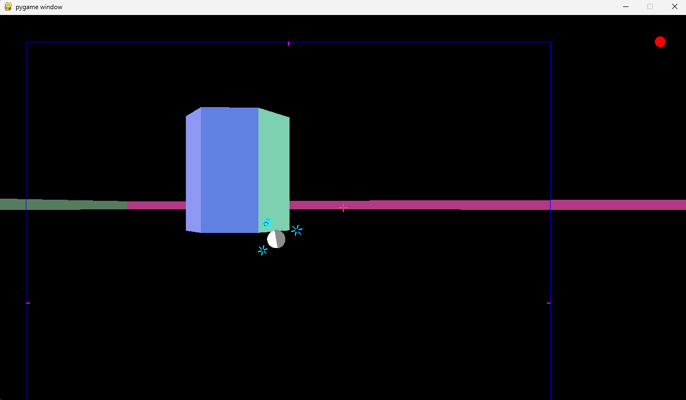
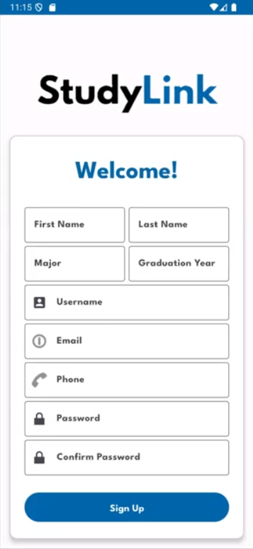

Projects
Remote Navigation Robot

- Description
- A mobile remote-navigation robot built around an ARM Cortex-M4, integrating servos, sensors, and a controllable Roomba base with a Python tool that renders 3D environmental data.
- My role
- I worked on the 3-D Python renderer and the full system integration (client/server communication, manual navigation, and displaying data). I wrote most of the C libraries (at the register level) that we used for communication with external modules.
- Skills and knowledge gained
- Embedded firmware in C, UART and I2C communication, real-time error handling and obstacle avoidance, and data visualization in Python.
- Resources used
- This project was heavily guided by the CPRE 2880 curriculum and required many hours reading datasheets and documentation.
Trackball

- Description
- A custom PCB for a wireless trackball using two ESP32-S3 microcontrollers, with power management and movement tracking.n words]
- My role
- This was a personal project, so I took the role of each step of the process: reverse engineering, hardware stack design, PCB layout, and firmware implemenation.
- Skills and knowledge gained
- PCB design in KiCad, schematic capture, reverse engineering an optical sensor's schematic, and wireless data communication.
- Resources used
- KiCad, ESP32 USB library
StudyLink (Android App)

- Description
- Full-stack Android app that allows students on the Iowa State University to schedule study sessions, chat with each other, and ask questions on a forum.
- My role
- Front-end design in Android Studio. Designed and implemented several features such as a full forum, friend system, video calling over WebRTC, ISU course schedule builder, and RateMyProfessor integration.
- Skills and knowledge gained
- Mobile app design, Android Studio
- Resources used
- COMS 3090 group project. Feedback from graduate advisor was incredibly valuable.